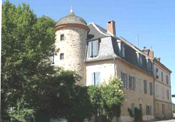
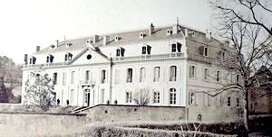
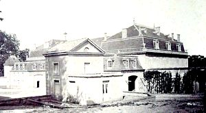
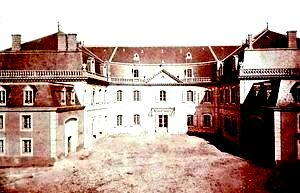

Recensement Jean-Claude Truffet
| Département | 81 — Tarn |
| Canton | Carmaux |
| Commune | Carmaux |
| Type d'édifice | Château |
| Période d'origine | XVII |




A Carmaux le château de Soulages et à quelques kilomètres à l'Est le château de Cadapau à Saint-Jean de Marcel. CARMAUX Jean-Baptiste de Ciron, conseiller, puis président au parlement de Toulouse de 1674 à 1724, achète la seigneurie de Carmaux. Sa fille apporte une partie de la seigneurie en dot, par son mariage en 1724 avec François Paul de Solages. Antoine Paulin de Solages, fils des précédents sera dans la famille de Solages le dernier à prendre ce titre de courtoisie de "marquis de Carmaux". Le dernier frère d'Antoine Paulin, Gabriel de Solages a réussi à accroître l'importance de l'entreprise. Après lincendie du château, Ludovic de Solages agrandit la maison du directeur des mines, il fait construire un chalet, quil transforme par la suite par un pavillon perpendiculaire. Ainsi, le bureau du directeur part sinstaller à Carmaux, tandis que les anciens bureaux des mines sont transférés au quartier de la Tour de Carmaux. Il fait également construire la maison du gardien. Il vend la société des mines de Carmaux un terrain de plusieurs hectares, afin de permettre la construction de la centrale électrique et le parc du pré-grand (1923). CADAPAU, au XVIIIe siècle, une noble famille, les Teyssier de Cadapau qui portaient le titre d'écuyer, possédaient cette propriété. Ses membres y vivaient grâce aux revenus de leurs domaines, mais aussi à la faveur de pensions dispensées par le roi. L'on trouve en 1623 la désignation comme collecteur de la chapelle des Gayrals, à Saint-Affrique d'Albi, noble Claude de Teyssier de Silhac. En 1693, c'est Alphonse de Teyssier qui meurt à l'âge de 65 ans. Vers 1696, l'on voit naître les enfants successifs d'Antoine de Teyssier de Cadapau et de Marie de Clergue de La Boissonade. Vers 1737, naissent ceux de Bernard de Teyssier de Cadapau, ancien capitaine pensionné au régiment de Cambraisis. En 1767, à Moularés, Jean-François de Teyssier de Silhac, écuyer, garde du corps du Roy, fils de Bertrand de Teyssier, ancien capitaine du régiment du Maine épousait Marie Anne Rouvellat, fille d'un bourgeois de la Selve. Sous le règne de Louis XVI vivait à Cadapau, Antoine-Bernard de Teyssier, conseiller auditeur à la cour des comptes de Montpellier.
Soulages; Il fut construit en 1755 par Gabriel de Solages dit « le Chevalier » fondateur des mines de Carmaux, et transformé en un imposant château par son arrière-petit-fils Achille pendant la Restauration (1814-1830), il fut entièrement détruit par un incendie le 1er avril 1895, destruction survenue dans des circonstances peu connues. Il reste aujourdhui quelques vestiges du château dorigine tel que : Un élément darchitecture, corbeau ou clé de voûte, représentant un soleil dans un blason, symbole de la famille de Solages, Un balcon dapparat en pierre de taille transformé en banc, Les caves voûtées de lancien château comblées avec les pierres de celui-ci. Un escalier monumental, long de 120 m de large et de 4 m, permet daccéder à la cité et facilite la communication entre les usines et les puits, et conduit au parc du pré-grand.
Cadapeau, de plan rectangulaire.
Famille de François Paul de Solages
"
Château de Soulages et de Cadapau à St-Jean de Marcel